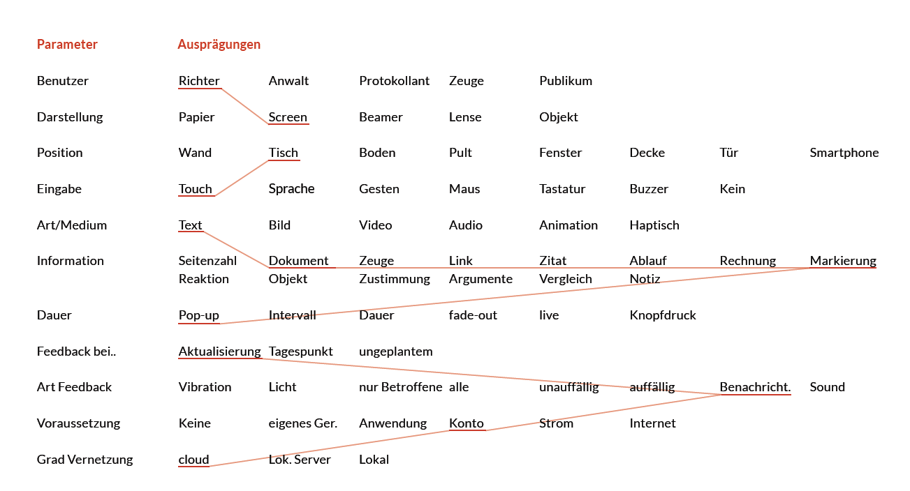
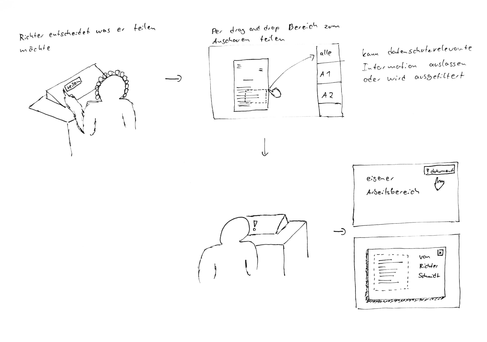
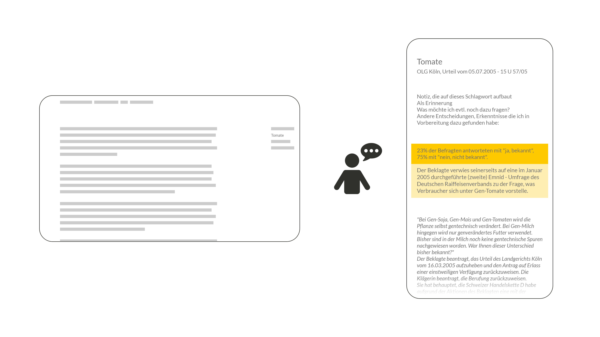

Da wir im vorangegangen Prozessschritt bereits unser Ziel, den Fokus sowie Lösungs-anforderungen definiert und festgelegt haben, fingen wir nun an, konkrete Ideen zu sammeln. Insbesondere war uns jetzt wichtig, viele Ideen zu generieren und die Schere erneut weit zu öffnen, bevor eine Auswahl stattfindet.
Die Ideen generierten wir zuerst durch klassisches Brainstorming, in dem wir unsere Einfälle meist direkt skizzierten und kurz beschrifteten. So kamen wir auf Ideen für ganze Konzepte oder teilweise auch nur für kleine, einzelne Funktionen und Details. Im Prinzip sammelten wir erst grundsätzlich einmal alles, was uns zu dem Thema Informationsaufbereitung und -präsentation einfiel.
Dabei kamen uns beispielsweise Ideen zu Information Sharing oder intelligenten Suchen. Wir skizzierten unter Anderem ein paar Drag-and-Drop Lösungen für die Urteilsbildung, bei der z.B. während des Prozesses Notizen oder Dokumentenschnipsel in eine Sammlung eingefügt werden konnten, um am Ende der Verhandlung einen Überblick, Fairness und Unterstützung zu garantieren. Die Idee hinter dem Drag and Drop Prinzip ist, die Interaktion mit einem Bildschirm möglichst einfach und intuitiv zu gestalten.
Für die eAkte sammelten wir allerlei Funktionsideen. Wir ließen uns von bestehenden Anwendungen inspirieren und analysierten in einer kleinen Programmrecherche interessante und spannende Funktionen wie die Markierung von Favoriten, Kalenderansichten, Schwärzen von Dokumenten, usw.
Auch für die Navigation ließen wir uns unterschiedliche Möglichkeiten einfallen. Dafür teilten wir unsere Gruppe auf und skizzierten etwa drei bis vier komplett verschiedene Navigationsmöglichkeiten in Einzelarbeit auf.
Aber nicht nur für die Software sollten Ideen generiert werden, auch die Frage nach dem Medium und der Kommunikations- und Präsentationskanäle stand noch offen. Um auf möglichst kreative Ideen zu kommen und neuartige Denkanstöße zu fördern, entschieden wir uns neben dem altbekannten Brainstorming für die Anwendung des morphologischen Kastens. Hierzu stellten wir unterschiedliche Parameter auf und ordneten entsprechende Ausprägungen zu. Die wilden Kombinationen der Ausprägungen versuchten wir in Ideen umzusetzen und skizzierten dies in auf Papier oder teilweise bereits digital.

So kamen wir beispielsweise auf eine Konzeptidee, bei der ein Richter über einen Touchscreen verschiedene Ausschnitte aus einem Text markieren und teilen kann. Diese Idee fanden wir sehr spannend. Sie würde das Problem des unklaren Diskussionsgegenstandes lösen und garantieren, dass jede Partei zur gleichen Zeit Informationen sehen, lesen und im Prozess verwenden kann. Beweisfotos müssten nicht mehr vorne am Richterpult gezeigt werden, sondern könnten einfach über ein Drag and Drop Prinzip an die Anwälte oder den gesamten Gerichtssaal inklusive Publikum und Presse geteilt werden.

In einem anderen Konzepteinfall kombinierten wir aus den Möglichkeiten des morphologischen Kastens eine Idee, bei welcher der Fokus auf Richter und Anwalt liegt. Über den Screen eines Smartphones können beide Parteien per Spracheingabe Notizen und Dokumente filtern und Inhalte suchen. Diese Lösung ist jedoch in der Praxis nicht umsetzbar, da sich Sprachein- und ausgaben im Kontext eines Gerichtssaals aufgrund der Lautstärke nicht eignen. Auch das Mitbringen eigener Geräte als Interaktionsgegenstand ist aus Sicherheitsgründen nicht möglich. Grundsätzlich fanden wir es jedoch interessant, Informationen einfach suchen zu können, indem Schlagwörter oder Suchbegriffe eingegeben werden. So könnte lange Sucherei vermieden und Prozesse schneller und genauer geführt werden, da die richtigen Informationen immer zur Hand wären.

Auch die Kombination, in der die Beziehung des Richter und des Protokollanten im Vordergrund steht, empfanden wir spannend. Über einen Bildschirm und eine Tastatur können auf Knopfdruck Markierungen und Reaktionen abgerufen werden. Eine Möglichkeit wäre beispielsweise, dass der Protokollant das Protokoll wie gewohnt führt. Der Richter könnte in einem geteilten Screen z.B. Zitate aus der Verhandlung in Echtzeit sehen und in seine Fragestellungen einbinden, sowie zur allgemeinen Unterstützung verwenden. Damit diese Idee funktioniert, muss das Protokoll eine gewisse Intelligenz aufbringen und das Getippte des Protokollanten in Bausteine, wie z.B. Zitate, Grundinformationen, Fragen, usw. interpretieren. Diese könnten auf der rechten Bildschirmhälfte des Richters dann farblich unterschiedlich dargestellt werden, sodass der Richter schnell und einfach zur gewünschten Information gelangt.
Da Richter möglicherweise nicht ständig das Protokoll benötigen, sondern dies nur bei Bedarf einsehen möchten, überlegten wir uns in einer alternativen Idee ein Konzept, welches auf Anfragen basiert. Der Richter kann, wenn nötig, eine Anfrage an den Protokollanten schicken, welcher ihm dann Informationen zur Verfügung stellt. Diese Idee ist jedoch Problemtisch in der Umsetzung, da der Protokollant bereits mit der Führung des Protokolls vollbeschäftigt ist und keine zusätzliche Zeit in die Beantwortung von Anfragen stecken kann, ohne die Dokumentation des Prozesses zu vernachlässigen.
Aus diesem Grund arbeiteten wir die erste Idee etwas aus, in dem wir sie durch smarte Filter ergänzten. Die erwähnten Bausteine können bei Bedarf von einem Richter gefiltert werden, sodass beispielsweise nur noch Informationen und Aussagen des Angeklagten sichtbar sind. Wird das Fenster nicht benötigt, kann es geschlossen werden. Der Protokollant kann wie gewohnt seiner Arbeit nachgehen, während der Richter die aufgäbe des Filterns und Suchens übernimmt.
Für welches Medium wird ein Konzept gestaltet?
Im Gespräch mit eJustice und auch in unseren Beobachtungen an pilotierenden Gerichten, konnten wir herausfinden, dass 22“ Bildschirme als Darstellungsmedium für die eAkte geplant sind. Unsere meisten Ideen fokussierten sich auf Lösungen, in denen Richter mit Bildschirmen interagieren können. Unser Ziel war es schließlich, die aktuelle und reale Situation zu verbessern und Richtern den Einstieg in das digitale Arbeiten zu erleichtern. Aus diesem Grund übernahmen wir die Bedingung, einen 22“ Touchbildschirm zu verwenden und leisten ein entsprechendes Gerät über das Medienlabor unserer Hochschule aus.